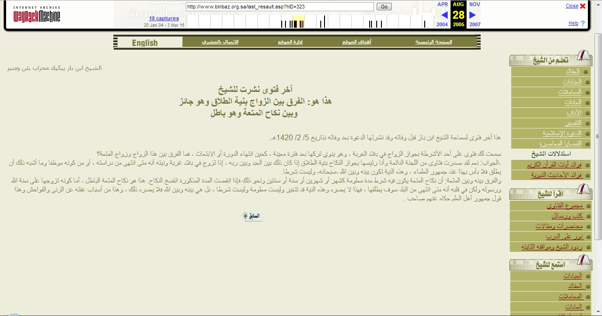
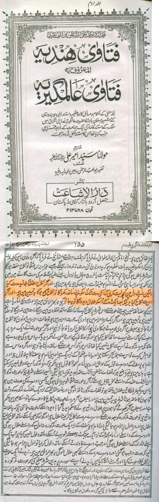

")
انتہائی ہوشیار رہیے ۔۔۔۔ آج کے مسلمان مسیار کے دفاع کی خاطر زبردست قسم کا جھوٹا پروپیگنڈہ کر رہے ہیں۔
(1) مسیار اصل میں دھوکہ والی عارضی شادی ہے۔ اس میں لڑکی کو نکاح دائمی کے نام پر دھوکہ دیا جاتا ہے، جبکہ دل میں نیت ہوتی ہے کہ مزے لینے یا کام نکل جانے کے بعد لڑکی کو طلاق دے دی جائے گی۔ یہ دھوکے والی شادی ہے۔
(2) لیکن آج مسلمان مسیار کے اس پہلو کو عوام سے چھپانے میں لگے ہوئے ہیں، اور وہ جھوٹا پروپیگنڈہ کر رہے ہیں کہ مسیار کا مطلب فقط یہ ہے کہ عورت اپنے چند حقوق مرد کو معاف کر دے۔ (یعنی نان و نفقہ کے حقوق وغیرہ)۔
۔
مسیار شادی عقد متعہ سے ہزار گنا بڑی برائی ہے۔ عقد متعہ میں صرف "وقت" کی شرط ہے۔ لیکن مسیار شادی میں "لڑکی کو دھوکہ" بھی ساتھ میں شامل ہے۔
سعودی ِعرب کے سابق مفتی ِاعظم شیخ ابن باز فرماتے ہیں (لنک):
[شیخ ابن باز صاحب سے سوال]:
آپ نے ایک فتوی جاری کیا ہے کہ اس بات کی اجازت ہے کہ ویسٹرن [مغربی] ممالک میں اس نیت سے شادی کر لی جائے کہ کچھ عرصے کے بعد عورت کو طلاق دے دی جائے۔۔۔۔۔ تو پھر آپکے اس فتوے اور عقد متعہ میں کیا فرق ہوا؟
[شیخ ابن باز کا جواب]:
جی ہاں، یہ فتوی سعودیہ کی مفتی حضرات کی مستقل کونسل کی جانب سے جاری ہوا ہے اور میں اس کونسل کا سربراہ ہوں اور یہ ہمارا مشترکہ فتوی ہے کہ اس بات کی اجازت ہے کہ شادی کی جائے اور دل میں نیت ہو کہ کچھ عرصے کے بعد طلاق دینی ہے [ہمارا تبصرہ: یعنی لڑکی کو دھوکے میں رکھنا جائز ہے اور اسے بتانے کی ضرورت نہیں کہ دل میں نیت تو کچھ عرصے بعد طلاق کی کر رکھی ہے]۔ اور یہ (طلاق کی نیت) معاملہ ہے اللہ اور اسکے بندے کے درمیان۔
اگر کوئی شخص (سٹوڈنٹ) مغربی ملک میں اس نیت سے شادی کرتا ہے کہ اپنی تعلیم مکمل ہونے کے بعد یا نوکری ملنے کے بعد لڑکی کو طلاق دے دے گا تو اس میں تمام علماء کی رائے کے مطابق ہرگز کوئی حرج نہیں ہے۔ نیت کا یہ معاملہ اللہ اور اسکے بندے کے درمیان ہے اور یہ نیت نکاح کی شرائط میں سے نہیں ہے۔
عقد متعہ اور مسیار میں فرق یہ ہے کہ عقد متعہ میں باقاعدہ ایک مقررہ وقت کے بعد طلاق کی شرط موجود ہے جیسے مہینے ، دو مہینے یا سال یا دو سال وغیرہ۔ عقد متعہ میں جب یہ مدت ختم ہو جاتی ہے تو خود بخود طلاق ہو جاتی ہے اور نکاح منسوخ ہو جاتا ہے، چنانچہ یہ شرط عقد متعہ کو حرام بناتی ہے۔ لیکن اگر کوئی شخص اللہ اور اسکے رسول ص کی سنت کے مطابق نکاح کرتا ہے، چاہے وہ دل میں طلاق کی نیت ہی کیوں نہ رکھتا ہو کہ جب وہ مغربی ملک کو تعلیم کے بعد چھوڑے گا تو لڑکی کو طلاق دے دے گا، تو اس چیز میں کوئی مضائقہ نہیں، اور یہ ایک طریقہ ہے جس سے انسان اپنے آپ کو برائیوں سے محفوظ رکھ سکتا ہے اور زناکاری سے بچ سکتا ہے، اور یہ اہل علم کی رائے ہے۔
یہ شیخ بن باز کا مرنے سے قبل آخری فتویٰ تھا جیسا کہ انکے عربی ویب سائیٹ پر لکھا ہوا ہے(لنک):
هذا آخر فتوى لسماحة الشيخ ابن باز قبل وفاته وقد نشرتها الدعوة بعد وفاته بتاريخ 5/ 2/ 1420هـ.
سمعت لك فتوى على أحد الأشرطة بجواز الزواج في بلاد الغربة ، وهو ينوي تركها بعد فترة معينة ، كحين انتهاء الدورة أو الابتعاث ، فما الفرق بين هذا الزواج وزواج المتعة؟
-الجواب: نعم لقد صدرت فتاوى من اللجنة الدائمة وأنا رئيسها بجواز النكاح بنية الطلاق إذا كان ذلك بين العبد وبين ربه ، إذا تزوج في بلاد غربة ونيته أنه متى انتهى من دراسته ، أو من كونه موظفا وما أشبه ذلك أن يطلق فلا بأس بهذا عند جمهور العلماء ، وهذه النية تكون بينه وبين الله -سبحانه- وليست شرطا.
والفرق بينه وبين المتعة: أن نكاح المتعة يكون فيه شرط مدة معلومة كشهر أو شهرين أو سنة أو سنتين ونحو ذلك فإذا انقضت المدة المذكورة انفسخ النكاح. هذا هو نكاح المتعة الباطل ، أما كونه تزوجها على سنة الله ورسوله ولكن في قلبه أنه متى انتهى من البلد سوف يطلقها ، فهذا لا يضره وهذه النية قد تتغير وليست معلومة وليست شرطا ، بل هي بينه وبين الله فلا يضره ذلك ، وهذا من أسباب عفته عن الزنى والفواحش وهذا قول جمهور أهل العلم حكاه عنهم صاحب .

حنفی و شافعی و حنبلی فقہ میں عارضی دھوکے والی شادی
برہ صغیر کے اہلسنت برادران اور بعض نواصب سعودی مفتیان ِکرام کے اس فتوے کا انکار کرتے ہیں، لیکن اہلسنت حضرات کو علم ہونا چاہیے کہ شیخ ابن باز اور دیگرسعودی مفتیان کرام کی اس مستقل کونسل کے اس فتوے سے قبل ہی یہ مسئلہ اہلسنت میں رائج ہے کہ طلاق کی نیت سے کیا گیا نکاح بالکل حلال ہے۔
امام نووی کہتے ہیں:
وبه قال القاضي أبو بكر الباقلاني قال القاضي وأجمعوا على أن من نكح نكاحا مطلقا ونيته أن لا يمكث معها الا مدة نواها فنكاحه صحيح حلال وليس نكاح متعة وإنما نكاح المتعة ما وقع بالشرط المذكور
ترجمہ:
قاضی کہتے ہیں:'اس بات پر اجماع" ہے کہ جو بھی مطلق نکاح(نکاح دائمی) کرتا ہے لیکن نیت یہ ہوتی ہے کہ عورت کے ساتھ صرف کچھ مدت کے لیے ہی رہے گا، تو بلاشبہ ایسا نکاح صحیح اور حلال ہے اور یہ نکاح المتعہ (کی طرح حرام) نہیں ہے کیونکہ نکاح المتعہ میں پہلے سے ہی یہ شرط مذکور ہوتی ہے (کہ ایک مدت کے بعد خود بخود طلاق ہو جائے گی)۔
حوالہ: شرح صحیح مسلم از امام نووی، کتاب النکاح
اور امام اہلسنت ابن قدامہ الحنبلی اپنی کتاب المغنی، جلد 7، صفحہ 571 پر لکھتے ہیں:
إن تزوجها بغير شرط، إلا أن في نيته طلاقها بعد شهر، أو إذا انقضت حاجته في هذا البلد، فالنكاح صحيح في قول عامة أهل العلم إلا الأوزاعي، قال: هو نكاح متعة. والصحيح أنه لا بأس به
ترجمہ:
اگر وہ عورت سے (مدت) کی کوئی شرط کیے بغیر نکاح کرتا ہے لیکن دل میں نیت ہے کہ اُسے ایک ماہ کے بعد طلاق دے دے گا یا پھر اُس علاقے یا ملک میں اپنی ضرورت پوری ہونے کے بعد طلاق دے دے گا (اور پھر آگے روانہ ہو جائے گا) تو پھر اہل علم کے مطابق بلاشبہ ایسا نکاح بالکل صحیح ہے ، سوائے الاوزاعی کے جنہوں نے اسے عقد المتعہ ہی جانا ہے لیکن صحیح یہی رائے ہے(جو اہل علم کی ہے) کہ اس میں کوئی مضائقہ نہیں۔
فتاوی عالمگیری جو کہ فتاوی ھندیہ کے نام سے بھی مشہور ہے، ہمارے اہلسنت بردارن کی فقہ حنفیہ کی مستند ترین کتب میں سے ہے اور ہر مدارس میں پڑھائی جاتی ہے۔ اس کو کئی سو اہلسنت علماء نے مل کر بادشاہ اورنگزیب عالمگیر کے حکم پر لکھا تھا۔ اس میں درج ہے:
اور اگر نکاح مطلقا بلا قید مدت کیا لیکن اپنے دل میں کچھ نیت کر لی کہ اتنی مدت تک اس کو اپنے ساتھ رکھونگا تو نکاح صحیح ہو گا۔ یہ تبیین میں ہے۔ اور اگر اس سے نکاح کیا برینکہ بعد ایک ماہ کے اُسکو طلاق دے دونگا تو یہ جائز ہے۔
فتاوی عالمگیری جلد دوم، صفحہ 155

بلاشبہ یہ مسیار وغیرہ سوائے غریب لڑکی کو دھوکہ دینے کے علاوہ کچھ نہیں اور اسکا عقد متعہ سے کوئی تعلق نہیں، جہاں عورت اور مرد کو پہلے سے ہی ہر چیز کھل کر معلوم ہوتی ہے کہ کتنی مدت کی بعد طلاق خود بخود ہو جانی ہے اور دونوں اس بات پر جب متفق ہو جاتے ہیں تب ہی یہ عقد متعہ عمل میں آ سکتا ہے۔
مسیار دھوکے والی شادی سے پیدا ہونے والے بچوں کے مسائل
اہم لنک:
JEDDAH: A large number of Saudis are engaging in temporary marriages with Indonesian women with the intention of divorcing them.
“Such marriages are likely to increase if Islamic scholars fail to give a clear ruling prohibiting them,” said Khaled Al-Arrak, director of Saudi affairs at the Saudi Embassy in Jakarta.
He said most Saudis were engaged in such marriages without realizing their consequences. “Some poor Indonesians marry off their girls to Saudis hoping it would put an end to their poverty and miseries. If the Council of Senior Islamic Scholars does not ban this type of marriages, things will go out of control,” Al-Arrak warned.
There are so many offices in Indonesia that facilitate such marriages, Al-Watan Arabic daily said. The marriage takes place in the presence of witnesses and a man posing as the father of the bride.
These women do not know that their marriages would end within a few days and that they would have to bear children of people who would abandon them.
Last year, the Saudi Embassy in Jakarta received 82 calls regarding children of Saudis who had married Indonesian women and then abandoned them. “We have received 18 such calls from abandoned Indonesian wives of Saudis and their children this year so far,” Al-Arrak said.
The Saudi Embassy official said that the cases registered with the embassy accounted for only 20 percent of such marriages that have actually taken place.
ایک اہلحدیث صاحب کا سعودیہ اور سعودی علماء کو بچانے کی کوشش
ایک اہلحدیث صاحب نے فرمایا کہ سعودیہ میں "فقہ اکیڈمی" کے نام سے ایک اور حکومتی ادارہ قائم ہے، اور اس نے اس مسیار (دھوکے والی شادی) کے خلاف فتوی دیا ہے۔
جواب
اس پر ان اہلحدیث صاحب سے یہ سوالات پوچھے گئے:۔
۔ کیا اب آپ کھل کر مسیار شادی کو زناکاری کہتے ہیں؟
۔ جو سعودی حضرات اس مسیار شادی میں ملوث ہیں، کیا ان کو آپ سنگسار کریں گے (یا پھر جو بھی اسکی سزا ہے وہ ان پر جاری کریں گے)؟
۔ یا پھر شیخ بن باز، سعودیہ کی مستقل فتوی کمیٹی، اور ان مسیار شادی کرنے والے حضرات پر "اختلاف رائے"، "اجتہادی غلطی" وغیرہ جیسی چیزوں کے نام پر کوئی حد جاری نہیں کریں گے؟
[سعودیہ میں ابھی تک ایسی کسی حد کو جاری ہوتے ہم نے نہیں سنا ہے]
۔ "اختلاف رائے" اور "اجتہادی غلطی" جیسی اصطلاحات کو آپ فقط شیخ ابن باز اور مستقل فتوی کمیٹی تک محدود رکھتے ہیں، یا پھر آپ اُن صحابہ کو بھی "اختلاف رائے" اور "اجتہادی غلطی" کا حق دیں گے جو عقد متعہ کو جائز و حلال جانتے تھے؟ اور پھر ان صحابہ سے آگے بڑھ کر اگر یہ بات اہل تشیع فقہ تک جائے تو کیا پھر بھی یہ "اختلاف رائے" کا حق اور "اجتہادی غلطی" کا "سنگل اجر" جاری رہے گا یا پھر یہاں یہ چیز بدکاری اور قابل حد بن جائے گی؟
ان سوالات پر وہ اہلحدیث صاحب یہ کہہ کر نکل گئے کہ سزا جاری کرنے کی ذمہ داری اس فیلڈ کے ماہرین/علماء پر ہے۔
یہ ایک نامکمل اور مہمل جواب ہے۔ یہ ایسا ہی ہے کہ زاہد کے زاہد رہے اور شراب بھی نہ چھوٹی۔
(بشکریہ ولایت ویب سائیٹ)